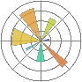

Personlige oplysninger
Adresse: Over Fussingvej 20, 8920 Randers NV
Tlf.nr.: 20 31 44 07
Email: theodorboas@outlook.dk
Fødselsdato: 11. oktober 2003
Resumé
Jeg er en selvlært programmør med stærke matematiske evner og en passion for at løse komplekse problemstillinger gennem kreativ tænkning og programmering. Som nybagt STX-student har jeg specialiseret mig i matematik, fysik og biologi, og jeg har allerede udviklet avancerede programmer til databehandling og simulering. Med erfaring i Python og kendskab til flere andre programmeringssprog søger jeg nu udfordringer i IT-branchen, hvor jeg kan udnytte mine tekniske og analytiske færdigheder. Mit mål er at arbejde med AI eller lignende områder i fremtiden.
Faglige kompetencer
Jeg er en kreativ og matematisk person, som lige har afsluttet gymnasiet
og nu søger udfordringer i mine sabbatår. Jeg har meget erfaring med
matematiske programmeringsprojekter (fx databehandling og simuleringer),
men jeg vil kunne bidrage med meget forskelligt indenfor softwareudvikling.
Jeg skal dog lige læres op først.
 Mine evner inden for matematik har ført til, at jeg har vundet Georg Mohr
to gange (en delt 21. plads og en delt 34. plads, se
Georg Mohr-Konkurrencens vindere
), hvilket viser at jeg kan tænke ud af boksen og kombinere logik med
kreativitet.
Mine evner inden for matematik har ført til, at jeg har vundet Georg Mohr
to gange (en delt 21. plads og en delt 34. plads, se
Georg Mohr-Konkurrencens vindere
), hvilket viser at jeg kan tænke ud af boksen og kombinere logik med
kreativitet.
Jeg har bl.a. udviklet mit eget program til Fourieranalyse, hvor jeg
bruger min viden fra calculus og komplekse tal til at approksimere datasæt
med en differentiabel funktion, hvilket er brugbart i mange sammenhænge,
fx hvis datasættet skal differentieres eller integreres.
IT-kompetencer
Jeg har meget erfaring med Python
, især med NumPy
og matplotlib

som jeg bl.a. har brugt til at lave 2D- og 3D-animationer med:
Tv: Moving average hvor jeg eksperimenterer med løbende tilpasning at vinduesbredden.
Midt: 3D-vektorfelt for tre hormoners gensidige påvirkning af hinandens produktion.
Th: Plot af 26.000 datapunkter fra SRP-forsøg med fysisk pendul.